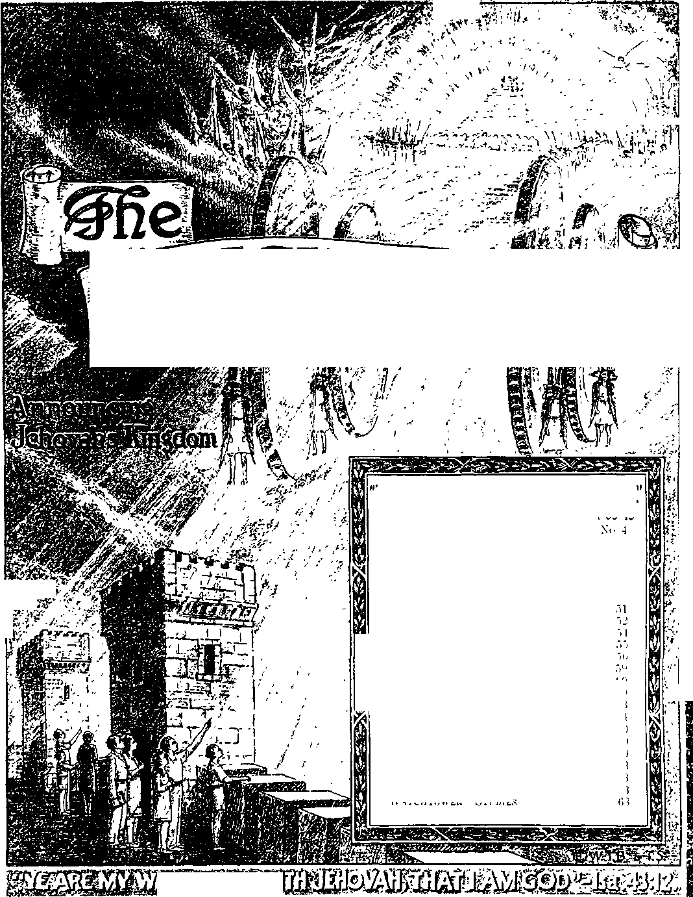

M
$
‘A
WwchtoWer
/ ' NlBii ' /
'?'
Ezekiel 35 15
\oi. LXI
FEBRUARY 15, 1940
CONTENTS
Power of the. Demons (Part 2) Demon-Woi ship Forbidden Catholic Religion Demom-m Po.itie-,, Magic and Demomsii, En trapped
Mobocraey Demoniam What Shall Be the End* "What Is His Name?" Resolution (Letter) . . Field Experiences "Refugees” Memorial
"Bittle Siege’’ Testimony Period “Salvation” Testimony Period Yearbook for 1940 1940 Calendar
“Watchtower” Sti dies
()(' (io 63
61
.511
63
63
Published Semimonthly By
WATCH TOWER BIBLE & TRACT SOCIETY
117 Adams Street • - Brooklyn, N.Y., U. S.A.
OFFICERS
J. F. Rutherford, President W. E. Van Amburch, Secretary “And all thy children shall be taught of Jehovah; and great shall be the peace of thy children." - haiah 54:13.
THE SCRIPTURES CLEARLY TEACH
THAT JEHOVAH is the only true God, is from everlasting to everlasting, the Maker of heaven and earth and the Giver of life to his creatures; that the Logos was the beginning of his creation, and his active agent in the creation of all things; that the Logos is now the Lord Jesus Christ in glory, clothed with all power in heaven and earth, and the Chief Executive Officer of Jehovah.
THAT GOD created the earth for man, created perfect man for the earth and placed him upon it; that man willfully disobeyed God’s law and was sentenced to death; that by reason of Adam’s wrong act all men are born sinners and without the right to life.
THAT JESUS was made human, and the man Jesus suffered death in order to produce the ransom or redemptive price for obedient ones of mankind; that God raised up Jesus divine and exalted him to heaven above every creature and above every name and clothed him with all power and authority.
THAT JEHOVAH’S ORGANIZATION is a Theocracy called Zion, and that Christ Jesus is the Chief Officer thereof and is the rightful King of the world; that the anointed and faithful followers of Christ Jesus are children of Zion, members of Jehovah’s organization, and are his witnesses whose duty and privilege it is to testify to the supremacy of Jehovah, declare his purposes toward mankind as expressed in the Bible, and to bear the fruits of the kingdom before all who will hear.
THAT THE WORLD has ended, and the Lord Jesus Christ has been placed by Jehovah upon his throne of authority, has ousted Satan from heaven and Is proceeding to the establishment of God’s kingdom on earth.
THAT THE RELIEF and blessings of the peoples of earth can come only by and through Jehovah's kingdom under Christ, which has now begun ; that the Lord’s next great act is the destruction of Satan’s organization and the establishment of righteousness In the earth, and that under the kingdom the people of good will that survive Armageddon shall carry out the divine mandate to “fill the earth” with a righteous race.
ITS MISSION
THIS journal is published for the purpose of enabl.ng the people to know Jehovah God and his purposes as expressed in the Bible. It publishes Bible instruction specifically designed to aid Jehovah’s witnesses and all people of good will. It arranges systematic Bible study for its readers and the Society supplies other literature to aid In such studies. It publishes suitable material for radio broadcasting and for other means of public Instruction in the Scriptures.
It adheres strictly to the Bible as authority for its utterances. It is entirely free and separate from all religion, parties, sects or other worldly organizations. It is wholly and without reservation for the kingdom of Jehovah God under Christ his beloved King. It is not dogmatic, but Invites careful and critical examination of its contents In the light of the Scriptures. It does not indulge In controversy, and Its columns are not open to personalities.
Yearly Subscription Price
United States, JI 00; Canada and Miscellaneous Foreign, JI 50; Guat Britain, Australasia, and South Africa, 6s. American remittances should be made by Postal or Express Money Order or by Bank Draft. Canadian. British. South African and Australasian remitlances should be maAecirect to the respective branch offices. Remittances from countries other than those mentioned may be made to the Brooklyn office, but by International Postal Money Order only.
Foreign Offices
British ...................................... 34 Craven Terrace, London, W 2, England
Canadian......................... 40 Irwin Avenue, Toronto 5. Ontario, Canada
Australasian ............. 7 Beresford Road, Strathfield N S. W , Australia
South African .......................... Boston House, Cape Town, South Africa
Please address the Society in every case.
(Translations of this journal appear several languages.)
All sincere students of the Bible who by reason of infirmity poverty or adversity are unable to pay the subscription price mav haie The Watchtower free upon written application to the publishers, made once eeeh year, stating the reason for so requesting it. We are glad to thus aid the needy, but the written application once each year is required by the postal regulations.
Notice to Subscribers: Acknowledgment of a new or a renewal subscription will be sent only when requested Change of address, when requested, may be expected to appear on address label within one month A renewal blank (carrying notice of expiration) will be sent with the journal one month before the subscription expires
Entered as second class matter at the post office at Brooklyn, A 1’ , under the Act of March S, 1ST!,
"REFUGEES”
Millions of refugees of various sorts now abroad in the earth, but this new booklet Refugees, written by the president of the Society, shows definitely how only such thereof as are of good will may and will find the one safe, abiding Refuge and hve. By its very front-cover picture Refugees tells a powerful story, but the contents within this 64-page booklet convey a message that God’s refugees will rejoice to get, and that His publishers will have great joy in distributing to them Release of this booklet for distribution coincides with March 23, the day of the Memorial, and detailed instructions thereon are found in the Informant. You may procure a copy of Refugees direct by remitting a contribution of 5c per copy.
MEMORIAL
Saturday, March 23, after six p.m., is the date for 1940 for the yearly feast in celebration of Jehovah’s name and to the sacrifice of the Lamb of God, Christ Jesus, his Theocratic King. Each company, therefore, should assemble after six p m of March 23, and the anointed ones thereof celebrate the Memorial, their companions the Jonadabs being present as observers. If there is no competent person present to deliver a brief discourse immediately preceding the partaking of the emblems, that short article appearing in the March 15, 1939, issue of The Watch-'u' r should be read before those assembled before partaking Sin<< tl.e break mg of the bread and drinking of the wine both picture tl.e ifisitb of Jesus, it follows that both emblems should be served together at partaking, and not separately The emblems should be tin leadened bread and real red wine Jesus and his apostles used real red wine in symbol of his blood, and the an., nted lemnimt should follow their lead A report of the eelebialioti should be made to the Society as instructed in the Informant In prepare tion therefor the article “Memorial” suggested above will be studied with profit.
“BATTLE SIEGE” TESTIMONY PERIOD
Spring’s opening will be marked by the “Battle Siege” Test: mony Period, during the whole month of April It will be a pi easing of the siege against religion by a campaign to increase yet more the subscription list of The Watchtower. The unusual offer in effect during the campaign will operate greatly to that result, to wit, one year’s subscription for The Watchtower together with the premium of a choice of any bound book and a self-coverea booklet on a contribution of but one dollar, foreign countries. $1.50. This Testimony Period, which is world-wide in scope, will
(Continued on page 63)
Vol. LXI February 15, 1940 No 4
PART 2
The fear of man brinaeth a snare; but whoso putteth his trust in the Lord shall be safe."—Prov
TEHOVAH instructed his typical people concern-I mg the snares set for them by the demons, and J at the same time pointed out the only means of escape to the place of safety. The foregoing text is exactly in point. With stronger reasoning such warning and insti action now applies to all those who have covenanted to do the will of God. All the demons having been cast out of heaven and down to the earth, and knowing that the time rapidly approaches when the final conflict takes place, they are now, under the leadership of Satan, the chief demon, working desperately to entrap the consecrated and plunge them into everlasting destruction. (Rev. 12:7-12) From Genesis to Revelation the Scriptures abundantly give warning of the influence and power of the demons over men. The numerous subtle means employed to entrap men are disclosed by the Scriptures, given to the man of God that he may be thoroughly equipped to serve righteousness. Only those who love Jehovah God and who serve him in spirit and in truth will now give heed to such warning; therefore, for the benefit of the anointed and the Jonadabs these truths are published. Religion has long been the chief means of inducing men to yield to the* influence of other men. The religious person fears the pastor, cleigyman or leader of his religious system, and hence he j ields to the instruction of such men, and in this way the demons entrap the unsuspecting ones. A person fears that he will not receive the approval of men, particularly the religious leaders, and thus he is led into the snare of the enemy. Let this great truth be fully impressed upon all the consecrated: that the only place of safety is with the Lord and only those who trust Jehovah God and are diligent to render themselves in obedience can be safe in these evil days. Every consecrated one must diligently avoid the seductive influence of creatures. Every one s.ho desires to have God’s approval must see to it that he does not rely upon men, because men are imperfect. Follow men only as such men follow the Lord Jesus Christ. “Whoso putteth his trust in the Lord shall be safe.” The marginal reading of this text is: “Whoso putteth his trust in the Lord shall
29 ■ 25
be set on high.” That means that the anointed shall be set on high with Christ Jesus only upon condition that such completely trust in the Lord and obey his commandments. The Jonadabs will receive the Lord's approval and find the way to life upon the same condition. Let Jehovah God be your fear, seek Ins approval, and not the approval of men.—Isa. 8: 13.
2 Christianity and religion are two sepaiate and distinct things, and the two are in complete opposition to each other. Those who practice religion are numerous; those who truly are Christian are few It will be found that the religionists are under the influence and power of the demons, whether thev know it or not. The Devil and his host of associated demons are desperately fighting against Christians, and every person who attempts to follow the Lord must be fully awake and constantly vigilant and active in his devotion to Almighty God. Always have in mind that there is but one place of safety, and that is in or under Christ Jesus, who is the head of Jehovah’s capital organization, which organization furnishes protection to those who flee to the Lord at this time. All such must full} trust Jehovah God and de vote themselves to the great Theocracy.
3 A brief reference ttf'the facts will show how com pletely religionists are in the dark. The Scriptures (Rev. 7:4-8; 14:1,3) make it plain that there will be only 144,000 of the members of “the body oi Christ” and that those who shall be spared in Armageddon will be few compared to the great number ol people now on the eaith. The World Almanai for the year 1939, published at New York, makes the following statement, to wit, (the claim is made) that in the earth there are 682,400,000 persons who are rated as Christians; 331.500,000 of such are rated as Roman Catholic; 144,000,000, Orthodox Catholic; 200.9Gt).-000, Protestant. Those figures given by woi hilv publication would indicate that there aie millions ol Christians; which, of course, is unscriptural. The claim is made that in the United States alone there are 64.000,000 of so-called “Christians”. Of couise, these figures are net accurate according to the Bible They are probably correct when applied to what is known and is practiced under the name of so-called “Christian religion”. To say the least of the millions who are rated as Christians, only a very small number are they who really trust God and Christ Jesus. The religionists and the practitioners of religion and their followers have fallen into the enemy’s snare.
4 Bible prophecy now in course of fulfillment overwhelmingly proves that within a very short time the genuineness of the claim of all such religionists will be put to the crucial test. The crucial test is now upon those who are anointed. The crucial test applied to “Christendom” will show that the great mass thereof are entirely without faith in God and are opposed to the great Theocratic Government, of which Christ Jesus is the King and Ruler, That great mass of persons rated as Christians actually deny God and Christ, and in fear of man they bow down to and yield to the totalitarian “form of godliness” and do the will of Satan and the other demons. By the act of Jehovah God, which the Scriptures designate his “strange act” (Isa. 28:21), the so-called “organized Christian religion” will be totally destroyed, never again to be restored. These are perilous times, as the Scriptures point out, and as the facts fully support. The condition of “Christendom” just preceding Armageddon is stated in these prophetic words: ' This know also, that in the last days perilous times shall come. For men shall be lovers of their own selves, covetous, boasters, proud, blasphemers, disobedient to parents, unthankful, unholy, without natural affection, trucebreakers, false accusers, incontinent. fierce, despisers of those that are good, traitors, heady, highminded, lovers of pleasures more than lovers of God; having a form of godliness, but denving the power thereof; from such turn away.” —2 Tim. 3:1-5. ’
5 The prophecy above quoted applies specifically at the present time, and concerning the climax the same prophetic scriptures say: “Yea, and all that will live godly in Christ Jesus shall suffer persecution. But evil men and seducers shall wax worse and worse, deceiving, and being deceived.”—2 Tim. 3:12,13.
0 Since the year 1918, and more particularly since 1933 forward, persecution of those devoted to God and his kingdom has constantly increased and evil men, particularly the religionists, have become more vicious. Being themselves deceived by the demons, they have deceived and continue to deceive multitudes of others. Today Communism, Nazism, and Fascism, and the religious leaders associated with them, increase in their wicked deeds toward the people. The masses of the people are under these wicked leaders, all of whom persecute the supporters of the Theocratic Government. It is necessary for the covenant people of God to have these scriptures and the attending facts in mind in order that they may escape the snares of the demons.
’ All persons who think can clearly see that the conditions now existing on the earth have grown worse in the past few years and that they continue to increase in wickedness even as foretold by the foregoing scriptures. As foreshadowing this terrible condition existing it is not without prophetic significance that during the actual presence of Jesus Christ in the flesh, more than nineteen centuries ago, and when he was preaching the truth constantly for three and one-half years, only a very small number of the people turned to him then in faith. Now Christ Jesus the King is present, having been enthroned, and few are they who are fully devoted to him, and concerning this very time Jesus said: “When the Son of man cometh, shall he find faith on the earth?’' (Luke 18:8) The present-day physical facts so completely fit the prophetic utterances of the Lord. All persons who have a desire for life should fully aw aken to the situation and ascertain the cause of the present-day perils, and what is the only means of escape to safety. An honest and unbiased consideration of the Scriptures and the admitted facts will prove to the satisfaction of sincere persons, and that beyond all doubt, that the influence and power of the demons over the people is the primary cause of these times of peril and that Satan, the chief among demons, together with his host of wicked ones, is hastening the whole world like a swift-flowing river down to eternal death, as pictured by the river Jordan flowing into the Dead sea. The demons have employed religion to bring about this terrible condition and by means of religion have deceived multitudes and are still deceiving them and turning them way from God Both the leaders and the rulers in religious institutions have been made to believe, by the influence of the demons, that religion and Christianity are one and the same thing, whereas religion is the open and violent adversary of all Christians. Religion and the practices thereof are the result of demon power and influence. Christianity stands for the truth and full obedience to the law of Almighty God. Religion is demon-worship. Christianity is the worship of Jehovah Cod in spirit and in truth. Sincere persons should give thoughtful consideration to the commandments of Almighty God given to his typical people concerning religion, and which commandments apply with stronger force to all today who are seeking the wa\ of righteousness.
DEMON-WORSHIP FORBIDDEN
8 From the time of Nimrod onward all the heathen nations practiced demon-worship, or religion, offei-ing sacrifices unto devils. The Israelites, the nation and only people chosen by Jehovah God, were in great danger of falling away to the demon religion. Therefore God commanded the Israelites td avoid demonism or religion. God commanded his typical people to offer to him certain animals in sacrifice, which sacrifices must be offered in the manner commanded by the Lord; and those sacrifices constituted prophetic pictures which God caused to be made foretelling the great sacrifice of Christ Jesus. In mockery of God and to cause the people to stumble and fall away from God the demon religion has required the practitioners thereof to offer animals in sacrifice unto demons or devils. The people of Israel fell under the demon influence, at certain times. The law which God gave to that people clearly shows that the sacrifice of animals to demons was in violation of “the everlasting covenant” (Gen. 9:5-17) and subjected the offerers thereof to the death penalty. Therefore Jehovah gave specific command to the Israelites concerning such sacrifices, to wit: “And they shall no more offer their sacrifices unto devils, after whom they have gone a whoring. This shall be a statute for ever unto them throughout their generations. And thou shalt say unto them, Whatsoever man there be of the house of Israel, or of the strangers which sojourn among you, that offereth a burnt offering or -acrifice, and bringeth it not unto the door of the tabernacle of the congregation, to offer it unto the Lord; even that man shall be cut off from among his people.”—Lev. 17 : 7-9.
8 Jehovah God plainly warned the Israelites that religion, practiced by the heathen, would be a snare unto them. The religionists served the demons, and such religionists constituted a menace to God's covenant people. Therefore God commanded his people concerning the heathen or demon-worshipers, as follows : “And thou shalt consume all the people which the Lord thy God shall deliver thee; thine eye shall have no pity upon them; neither shalt thou serve their gods ; for that will be a snare unto thee. If thou shalt say in thine heart, These nations are more than I; how can I dispossess them? thou shalt not be afraid of them; but shalt well remember what the Lord thy God did unto Pharaoh, and unto all Egypt; the great temptations which thine eyes saw, and the signs, and the wonders, and the mighty hand, and the stretched out arm, whereby the Lord thy God brought thee out; so shall the Lord thy God do unto all the people of whom thou art afraid.”—Deut. 7: 16-19.
10 The Israelites did not give heed to the warning of God concerning religion or devil-worship. God had chosen the Israelites for his own name’s sake, and because of their unfaithfulness in yielding to demon influence God said to them: “You only have I known of all the families of the earth; therefore I will punish you for all your iniquities.”—Amos 3: 2.
11 The Scriptures make it clear as to what constituted the iniquities of the Israelites, for which God punished them, namely, idolatry or demon-worship: “All the gods of the people are idols.” (1 Chron. 16:26; Pss. 96:5; 97:7) “But [they] were mingled among the heathen, and learned their works. And they served their idols; which were a snare unto them. Yea, they sacrificed their sons and their daughters unto devils, and shed innocent blood, even the blood of their sons and of their daughters, whom they sacrificed unto the idols of Canaan; and the land was polluted with blood. Thus were they defiled with their own works, and went a whoring with their own inventions. Therefore was the wrath of the Lord kindled against his people, insomuch that he abhorred his own inheritance. And he gave them into the hand of the heathen; and they that hated them ruled over them.” (Ps. 106:35-41) “But I say, that the things which the Gentiles sacrifice, they sacrifice to devils, and not to God: and I would not that ye should have fellowship with devils. Ye cannot drink the cup of the Lord, and the cup of devils: ye cannot be partakers of the Lord’s table, and of the table of devils.” (1 Cor. 10:20,21) These scriptures show that a religionist cannot be a true Christian until he fully abandons religion and devotes himself unconditionally to God and Christ and serves God ami Christ accordingly.
12 The Bible used chiefly by the Catholic organization is known as the Douay Version ; and from that version the following texts are quoted, to show that the Catholic leaders have no reason to be ignorant of God’s commandment concerning demon religion. “Go not aside after wizards [them that have familiar spirits; practitioners of demon religion], neither a-k any thing of soothsayers, to be defiled by them : 1 am the Lord your God.”—Lev. 19: 31.
15 “The soul that shall go aside after magicians [such as have familiar spirits; practitioners of demonism], and soothsayers, and shall commit fornication with them, 1 will set my face against that sou), and destroy it out of the midst of its people.”—Lev. 20:6.
11 Another text in point: “A man, or woman, in whom there is a pythonical or divining spirit [(Authorized Version) that hath a familiar spirit, or that is a wizard; or spirit-medium], dying let them die: they shall stone them; their blood be upon them." (Lev. 20:27, Douay Version) “Neither let there be found among you any one that shall expiate his son or daughter, making them to pass through the fire; or that consulteth soothsayers, or observeth dreams and omens, neither let there be any wizard, nor charmer, nor any one that consulteth pythonic spirits, or fortune-tellers, or that seeketh the truth from the dead; for the Lord abhorreth all these things, and for these abominations he will destroy them at thy coming.”—Deut. 18:10-12, Douay Version.
CATHOLIC RELIGION DEMONISM
15 The Catholic system of religion is one that designates itself and its practices as “the Christian religion”. Doubtless there were many sincere men among those who made up that organization at the beginning, and who later fell away to demonism, themselves being deceived, and who as leaders deceived many others. What is here published is not for the purpose of ridicule, but that the sincere people in the Catholic organization may see and appreciate the perilous position in which they have been put by their clergymen or leaders in the Catholic organization. God specifically commands that those who serve him acceptably must serve him in truth and that such must avoid all manner of demon-worship. “Thou shalt have no other gods before me. Thou shalt not make unto thee any graven image, or any likeness of any thing that is in heaven above, or that is in the earth beneath, or that is in the water under the earth: thou shalt not bow down thyself to them, nor serve them; for I the Lord thy God am a jealous God, visiting the iniquity of the fathers upon the children unto the third and fourth generation of them that hate me.”—Ex. 20:3-5.
16 Paganism means heathenism, that is, the practice of idolatry or demon religion, and is demonworship. (See McClintock & Strong's Cyclopedia.) Pagan Rome was unalterably opposed to Christ Jesus and the truth declared by him. Paganism is therefore anti-Christian, because it is demonism. That the Catholic religious system or organization adopted the pagan religion, note what follows from an authoritative statement of one among the high Catholic authorities. The Roman Catholic Hierarchy follows its usual course in charging that The Watchtower, in ignorance of the facts, makes the statement that the Catholic religion is demonism. That The Watchtower states the truth, let sincere persons give consideration here to the testimony of the Catholic organization’s own authority and then determine what course to take. John Henry Cardinal Newman, in 1878, published An Essay on the Development of Christian Doctrine. That publication was issued at London, England, by Pickering & Co., in 1881. From chapter eight of that publication, page 355, the following is quoted and which was written by Cardinal Newman, to wit:
“Chapter 8. Application of the Third Note of a True Development.
“Assimilative Power
[Page 355] ". . . Had it [the Roman Catholic church] the power, while keeping its own identity, of absorbing its [pagan] antagonists, as Aaron’s rod, according to St. Jerome’s illustration, devoured the rods of the sorcerers of Egypt? Did it incorporate them into itself, or was it dissolved into them’ Did it assimilate them into its own substance, or, keeping its name, was it simply infected by them?”
[Page 371] “5. [Section 1. §2.] Confiding then in the power of Christianity [Roman Catholic religion] to resist the infection of evil, and to transmute the very instruments and appendages of demon-worship to an evangelical use, and feeling also that these usages had originally come from primitive revelations and from the instinct of nature, though they had been corrupted; and that they must invent what they needed, if they did not use what they found; and that they were moreover possessed of the very archetypes, of which paganism attempted the shadows; the ruler* of the [Roman Catholic] Church from early times were prepared, should the occasion arise, to adopt, or imitate, or sanction the existing rites and custom* of the populace, as well as the philosophy of the educated class.”
[Page 373] “6. . . . The use of temples, and these dedicated to particular saints, and ornamented on occasions with branches, of trees; incens<., lamps, and candles; votive offerings on recover} from illness; holy water; asylums; holydays ami seasons, use of calendars, processions, blessing* on the fields; sacerdotal vestments, the tonsure, the ring in marriage, turning to the East, images at a later date, perhaps the ecclesiastical chant, and the Kyrie Eleison, are all of pagan origin, and sanctified by their adoption into the [Roman Catholic] Church."
17 Mark this : that Newman was created a cardinal by Pope Leo XIII in the year 1879. There is no doubt about the learning of Newman, and there is no doubt from his testimony above quoted that the ceremome* practiced by the Roman Catholic religious *ystem originated with the demons and were practiced b\ Pagan Rome and adopted by the Roman Catholic so-called “Christian” religious organization.
18 James Cardinal Gibbons, another Catholic authority, in his book The Faith of Oui Fathers, explains the doctrine of •'purgatory” as taught by the Catholic organization, and then says: “This intei-pretation is not mine. It is the unanimous voice of the Fathers of Christendom” ; which is proof that ' purgatory" is a part of the doctrines originating with demons. The doctrine of “purgatory” finds no support by any text of the Bible. On the contrary, th< Bible flatly contradicts the "purgatory" doetune as taught by the Catholic organization ; and this is proof conclusive that said doctrine proceeds from the demons. The Catholic, demon “purgatory” doctrine, in substance, is this: ‘That man possesses an immortal soul; that at the time of dissolution only the bodv dies, and that the soul lives on forever; that the wicked soul suffers eternal torment in hell; that all souls in purgatory, a place supposed to be between heaven and hell, spend an indefinite time and that in purgatory that soul is conscious but wholly unable to help itself; and that with the prayers of others on earth that soul in time may be saved.-1 (See The Fatih 0/ Our Fathers, chapter 16, pages 205-209.) The artist Dore drew many pictures purporting to represent ■‘purgatory’", and which pictures could have originated only in the mind of one under the power and influence of the demons. That the doctrine of "purgatory” originated ■with Satan, the chief of demons,'is clearly shown from the Scriptures. The Bible tells of Satan’s lie to Eve, in which he said to Eve: ‘’Ye shall not surely die. For God doth know’ that in the day ye eat thereof, then your eyes shall be opened, and ye shall be as gods, knowing good and evil.” (Gen. 3: 1-5) This statement the Devil made to Eve in response to her statement to him that Jehovah God, the Creator, had commanded that they should not eat of a certain fruit. Satan then spoke the above lie and told her that, when she did eat, she would become “as gods”, that is, demon gods. The yielding of Eve to that lie with the hope that she might become “as gods”, that is, demons, was the beginning of religion amongst human creation. The result of yielding to such lie was that Adam and Eve were condemned to death. That Satan brought about their death by this religious means is clearly shown by the Scriptures.—Rom. 5: 12; John 8:43,44.
Satan, the chief amongst demons, is the adversary of God. The Bible contains the word of Almighty God, which word of God is the truth. (John 17:17; Ps. 119: 105) Any doctrine taught by man which contradicts the Word of Almighty God is a lie, and such doctrine or lie proceeds from the adversary, the Devil, and his associated demons The doctrines and practices 01 the Catholic-religion organization are specifically contradicted by the Bible. That is particularly true with reference to “purgatory”; to the primacy of the pope; to the dead as being more alive than ever, and prayers for the dead; to the dcctrine and claim that the church of God is founded upon Peter; to holy water; to images and the veneration thereof; and to many other doctrines; and these prove that the Catholic religion is demonism; and by the practice of demonism the people are led fully into the snare of the Devil and ultimately into destruction.
POLITICS, MAGIC AND DEMONISM
20 Politicians have .always required religion and used it as their handmaid. From the time of ancient Babylon and ancient Egypt on down to this very hour the visible ruling elements ot all nations have had their “wise men”, astrologers, soothsayers and other demon-controlled religionists at hand for counsel and advice. Such rulers have always called for “more religion”, and continue to advocate more religion to this very day, saying that “the religion of your individual choice is all that is necessary, whether that religion be Catholic, Protestant, Jewish or Mohammedan”. “Any one of these,” say the politicians, “meets the requirements.” This applies emphatically to all dictatorial governments; and even in the democracies, such as the United States, the president and governors of states say, “We must have more religion; otherwise the government of the United States cannot stand.” Without an exception, the religionists have always opposed the real and true servants of God and Christ, and that opposition show's further that religion proceeds from Satan and the other demons, who are the adversaries of God and Christ and all who follow Christ.
21 Note some of the Scriptural proof upon this point. The founder of Babylon, the dictatorial nilm. made religion the leading factor of his government (Gen. 10: 9, 10) As to ancient Egypt, the king Pharaoh set himself up as a mighty one and in full opposition to the servants of Almighty God. Moses and Aaron appeared before Pharaoh and deliveied to him the message of Jehovah God, performing there certain miracles. “Then Pharaoh also called the wise men and the sorcerers: now the magicians of Egypt, they also did in like manner with their enchantments. For they cast down every man Ins rod. and they became serpents; but Aaron’s rod swallowed up their rods.”—Ex. 7: 11, 12.
22 Those magicians or sorcerers were the visible-representatives and mediums of demons, influeneimr and inducing the king Pharaoh to put himself 11: d.-rect opposition to the Almighty God. Each, turn Jehovah's anointed servant appeared befoie Pha raoh he called upon the sorcerers, magicians, the demon representatives in the practice of religion, to appear before him and perform certain ceremonies AEx. 8:7,18,19; 9:11.
23 Nebuchadnezzar, the king of Babylon, had his demon mediums or representatives always on hand to give that political ruler advice. (See Daniel 1: 20: 2: 2.) Those demon representatives, practitioners ot religion, were in complete opposition to Jehovah God and his servants; and this is proved by the fact that Jehovah God gave to his servant Daniel wisdom and power to tell the king's dreain and to explain to the king the meaning thereof. “Daniel answered in the presence of the king, and said, The secret which the king hath demanded, cannot the wise men, the astrologers, the magicians, the soothsayers. shew’ unto the king; but there is a God in heaven that revealeth secrets, and inaketh knowm to the kin" Nebuchadnezzar what shall be in the latter days. Thy dream, and the visions of thy head upon thy bed, are these; as for thee, 0 king, thy thoughts came into thy mind upon thy bed, what should come to pass hereafter; and he that revealeth secrets mak-eth known to thee what shall come to pass. But as for me, this secret is not revealed to me for any wisdom that I have more than any living, but for their sakes that shall make known the interpretation to the king, and that thou mightest know the thoughts of thy heart.”—Dan. 2: 27-30; 4:7.
24 The Israelites would have been entirely safe from the influence and power of demons had they obeyed God’s commandment and kept their covenant and avoided religion. Instead they demanded a king, and God permitted them to have a king, and quickly the king embraced devil religion, and, being influenced by that devil religion, the king violated God’s commandment and rebelled against the Most High. Samuel the prophet and visible representative, a spokesman of Jehovah God, delivered to Saul the king this message from the Most High : “Behold, to obey is better than sacrifice, and to hearken than the fat of rams. For rebellion is as the sin of witchcraft, and stubbornness is as iniquity and idolatry.” (1 Sam. 15:22,23) Thereafter Saul, who continued to hold the office of king, made himself a further abomination before Almighty God by seeking advice from a demon medium, the witch of Endor, who lied to Saul and led him further into the demon’s snare. (1 Sam. 28: 7.8) Saul, under the influence of demons, continuously persecuted David, the servant of God, and this persecution he carried on while at the same time he kept up an appearance of godliness; and thus Saul the politician had an outward form of godliness, but denied the supreme power of Almighty God, just as the political religionists do in this present day. Because Saul embraced the demon religion he went into darkness concerning God's purpose and continued ever afterwards in darkness, and had no truth or revelation from Almighty God. (See Exodus 22:18; 1 Samuel 28: 6-18.) The action of Saul was in direct violation of the law of God, as related to demon religion and the practice thereof. “Ye shall not eat any thing with the blood; neither shall ye use enchantment, nor observe times. Regard not them that have familiar spirits, neither seek after wizards, to be defiled by them; I am the Lord your God.”—Lev. 19:26,31; Ex. 22: 18.
25 Saul’s death was because he rebelled against Jehovah God in a manner similar to that of the rebellion of the Devil, and Saul sought advice of one who was a demon medium or wizard: “So Saul died for his transgression which he committed against the Lord, even against the word of the Lord, which he kept not, and also for asking counsel of one that had a familiar spirit, to inquire of it; and inquired not of the Lord; therefore he slew him, and turned the kingdom unto David the son of Jesse.” (1 Chron. 10:13,14) This ought to be a warning to all the clergy and the principal ones of their flocks, namely, the politicians and commercial men, who continue to say to the people: “What we need is more religion."
20 It is appropriate here to compare the course of King Saul, and the cause of his death, with that of the religious leaders or clergymen, both those of the people of Israel and those of “Christendom”, so called. Saul, placed in a position of favor by Jehovah God, went over to demonism, which is religion; and such foreshadowed or was typical of the clergymen of “Christendom” and their course of action and their final end. Concerning those who claim to serve God and who act as clergymen and religious leaders of the people of so-called “Christendom”, and who practice religion, it is written: “For the leaders of this people cause them to err; and they that are led of them are destroyed.” (Isa. 9:16) Such religious leaders, who assume to teach the people, do. by reason of yielding to religion or demonism, become blind to the truth and lead others into blindness; and concerning such the Lord Jesus says: “Let them alone; they be blind leaders of the blind. And if the blind lead the blind, both shall fall into the ditch.' (Matt. 15: 14) The Roman Catholic Hierarchy takes the lead today amongst all religionists on the earth in an attempt to lead and teach the people in political affairs of the nation, as well as commerce, and to advise the nations and their political leaders what course to take. That religious organization participates in the politics of every nation on earth. The) of the Hierarchy cause the people to err, and all aie headed for destruction, as the scriptures above cjuot ed plainly state. All those who give heed to religion^ teachers and follow them blindly are therefore held under the influence and control of the demons, and are in line for the same end, unless they awaken to the great danger and turn quickly to Jehovah God and fully trust in him.
ENTRAPPED
" Because the politicians and commercial leaders are induced to believe that the clergy are clothed with some invisible power, such politicians and commercial men fear their religious leaders, and therefore they are led into the snare and entrapped In the demons. Politicians and commercial men seek the advice of clergymen, and the clergymen, being under the influence of demonism or demons, give bad advice. Some Biblical history is here quite appropriate. Ahab, the king of Israel, gathered unto himself 400 “prophets”, so called, who were false prophets, of course, and practitioners of the Devil religion, and they gave Ahab bad advice: “Then the king of Israel gathered the prophets together, about four hundred men, and said unto them, Shall I go against Ramoth-gilead to battle, or shall I forbear? And they said, Go up; for the Lord shall deliver it into the hand of the king.”—1 Ki. 22: 6.
28 Micaiah, the true prophet of Almighty God, was called before Ahab the king, who demanded that Micaiah should advise him; and because Micaiah gave good advice Ahab caused Micaiah to be imprisoned, no doubt on the charge that he was interfering with the war. Ahab the king went to battle and was slain. Thus was foretold that the religionist leaders of this day give advice to the politicians contrary to the Word of God, and the result to the political rulers is certain to be disastrous. Like advice was given to the king in Jeremiah’s time, with similar bad results. (Jer. 27:9,10) There are many other Biblical accounts of advice being given rulers by religious leaders, which resulted bad for them.—-Gen. -11: 1-24; Dan. 2:1-13; Ex. 7 :11-8: 19; 9: 11.
29 The Scriptures refer to the present time as “the last days”; and in this same connection, speaking of the present-day clergymen, religious leaders who give advice to the politicians, concerning these religionists the scripture reads: “Having a form of godliness, but denying the power thereof: . . . ever learning, and never able to come to the knowledge of the truth.” (2 Tim. 3: 5-7) In this present day the religious leaders claim to be learned and ever learning, but they, by their course of action, show that they have neither knowledge nor appreciation of the truth of God’s Word; and this is due to the fact that they have fallen under the power of the demons. Therefore they are in darkness concerning Jehovah’s purpose and have no revelation whatsoever from God of his purpose, and, being blind to the truth, they lead the blinded ones into the ditch of destruction. They attempt to advise political and commercial men and at the same time openly oppose those who proclaim God's Word of truth to the people. Let it be admitted that their opposition to The Theocracy is due to ignorance. That further supports the conclusion that they are under the influence and power of the demons because of spiritual blindness. Continuing, the scripture tells why these men are of Satan’s organization and therefore blind: "Now as ■lannes and Jambres withstood Moses, so do these also resist the truth: men of corrupt minds, reprobate concerning the faith. But they shall proceed no further: for their folly shall be manifest unto all men, as theirs also was.”—2 Tim. 3: 8, 9.
30 Those religious leaders and advisers are likened unto the false prophets amongst Israel, particularly Balaam the prophet, who claimed to serve God, but who was a soothsayer, that is, under the influence and power of the demons, and who acted in that capacity. (Josh. 13:22) He hired himself out to politicians and tried to use religion against the people of God, but his efforts were in vain.—Num 22: 1-41; 23:1-30.
S1 Elymas the magus or sorcerer gave advice to the political rulers against the Christian the apostle Paul, but that ^advice was prompted by the demons and resulted in nothing good. (Acts 13: 6-12) Today the clergymen who lead in the practice of the so-called “Christian religion” proffer advice to the politicians and commercial strong men, which advice leads the men so advised right into the snare of the Devil. The religious leaders enter into a conspiracy with one another and, with the political, judicial and commercial men, work together in an effort to injure the witnesses of Jehovah God and to oppose the Theocratic Government and, in doing so, those conspirators, as the Scriptures disclose, are influenced by the demons and act accordingly. In support of this, note the following scriptures according to the Catholic Bible, Douay Version, and which are addressed to those who trust in God “Say ye not: A conspn acy for a.11 that this people speaketh, is a conspiracy neither fear ye their fear, nor be afraid. Sanctify the Lord of hosts himself: and let him be your fear, and let him be your dread.” “And when they shall say to you: Seek of them that have pythomcal spirits _(A.V.) familiar spirits; demon mediums], and to diviners, that mutter in their enchantments. Should not the people seek unto their God [Jehovah], and not for the living to the dead? To the law rather, and to the testimony. And if they speak not according to this word, they shall not have the morning light ” —Isa. 8:12, 13,19,20, Douay Version.
32 The religionists have fully approved the con spiracy formed amongst the politicians to rule the world by human dictators instead of having it ruled by the great Theocracy. The pope enters into an alliance with the political rulers to accomplish the rule of the world by dictators, and practically all the religious leaders oppose The Theocracy ; and both the advisers, that is, the religious leaders, and the politicians and others who follow such advice straightway are ensnared by Satan, and they end ultimately in destruction. Fascists, Communists and Nazis, in fact, all “corporate states”, have their religious advisers, and chief amongst such advisers are those men who compose the Roman Catholic Hierarchy, directed from Vatican City by the religious politician, Pacelli.
33 “Egypt” symbolizes the wicked world over which Satan has long ruled, and the Scriptures say that symbolic Egypt was the place where the Lord Jesus Christ was crucified. (Rev. 11: 8) Therefore ancient Egypt, with its absolute dictatorial government and its religious, commercial and military parts thereof, pictured the present-day wicked rule by Satan and his horde of demons, particularly nations which have gone totalitarian or “corporate state”. Note in this connection the prophecy of God that foretells that religion, which is Jemonism, has been the means of leading the politicians fully into Satan’s snare: “The burden [the doom] of Egypt. Behold, the Lord [Jehovah] rideth upon a swift cloud [hence invisible to human eyes; and the cloud symbolizes a storm of trouble for his opposers], and shall come into Egypt; and the idols of Egypt shall be moved at his [Jehovah’s invisible, cloud-obscured] presence, and the heart of Egypt shall melt in the midst of it. And I will set the Egyptians against the Egyptians: and they shall fight every one against his brother, and every one against his neighbour; city against city, and kingdom against kingdom. And the spirit of Egypt shall fail in the midst thereof; and I will destroy the counsel thereof; and they shall seek to the idols, and to the charmers, and to them that have familiar spirits, and to the wizards. And the Egyptians will I give over into the hand of a cruel lord [God’s Executive Officer, Christ Jesus, who is cruel to God’s opposers] ; and a fierce king [that is, against wickedness] shall rule over them, saith the Lord, the Lord of hosts.” (Isa. 19:1-4) Thus the Lord foretells of the demon influence upon the nations, and particularly upon the political rulers, and what shall be the end thereof.
54 The 16th chapter of Revelation shows that God’s wrath is against the political rulers of the earth and that their end is destruction. The religious leaders, particularly the Roman Catholic Hierarchy, have failed to tell the political rulers anything concerning God’s purpose to destroy them, and this manifestly because the religionists are allies of the political rulers and, being under the influence and power of the demons, are blind to God’s purpose. All the dictators of the world have their religious advisers. The ruler of Germany is a Catholic and is constantly advised by the Vatican. He also freely consults the demons through their visible representatives. Other political rulers follow a similar course. Even in the democracies, the chief politicians do the same thing; and this shows that all such are in the darkness and hence blind to God’s purpose and are induced to abuse and persecute the servants of God, who bring to them the message of truth. It is the will of God that the warning from him must be declared, and only those who are entirely devoted to the great Theocrat will declare that warning; and when such warning is declared the combined religious, political and commercial elements and their publications ridicule and denounce God’s witnesses. As an illustration, the New York World of Monday, July 5, 1927. published the following:
“Giant Radio Chain Hears Rutherford “greatest hook-up spreads to all parts of the world
SPEECH CONDEMNING ORGANIZED CLERGY
“By means of the greatest hook-up in radio history Joseph F. Rutherford yesterday transmitted throughout the civilized world his challenge to orthodox clergy, big politicians, and high financiers as agents of Satan. The hook-up consisted of two more stations than broadcast the Dempsey-Sharkey fight, the previous record, and of three more than reported the reception of Lindbergh in Washington and tin-city. ‘Desert organized Christianity,’ thundered Rutherford. ‘It is an unholy alliance against the common peoples of earth.’ ”
” The speech delivered on that occasion at the Toronto convention of Jehovah’s witnesses greatlj aroused the indignation of the modern religionists Another speech delivered at that same convention under the title “Passing of the World Powers” wa-delivered and widely broadcast, and which also groat ly stirred the ire of religious leaders and supporters, proving that such religionists are against the kingdom of God under Christ. The message of thos<-speeches was not the composition of man, but words taken from the Bible and applied to facts well know n to all. Because of this opposition to his message the wrath of God is against the Babylonish system. “Christendom,” that is, against the political, religious combination, which rules and which rides oppressively upon the waters of the modern-day Euphrates river, that is, upon the common peoples that bear up the rulers. The Resolution on that occasion, unanimously adopted by God’s people assembled, taken in connection with the aforementioned speeches, appears to constitute the sixth “bowl” or ' vial ' of tin. series of seven annual messages delivered to the pen pies of “Christendom”. Note the prophetic wordapplying thereto and recorded at Revelation 16 12-1 u. A.R.V.: “And the sixth poured out his bowl upon the great river, the river Euphrates; and the water there of was dried up, that the way might be made ready for the kings [Jehovah,and Christ Jesus] that come from the sunrising. And I saw coming out of the mouth oi the dragon [Satan’s organization, represented < liiviix by the religious element], and out oi the mouth oi the beast [the state], and out of the mouth of the false prophet [anti-Theocracy, made up of the combined elements of Satan’s organization], three unclean spirits, as it were frogs [loud-mouthed croakers] : for they are spirits of demons [that is. visible representatives of demons], working signs; which go forth unto the kings of the whole world, to gather them together unto the war of the great day of God, the xYlmighty. (Behold, I come as a thief. Blessed is he that watcheth, and keepeth his garments, lest he walk naked, and they see his shame.) And they [the demon hosts] gathered them [the earthly representatives of the demons] together into the place which is called in Hebrew Har-Maged-on.” (For further consideration on this point see The Watchtower October 1, 1927, page 297; and Light. Book Two.) That movement of the demons against God’s people pictures the international movement against those who support the Theocratic Government described in Ezekiel’s prophecy, chapters 38 and 39, which movement is under the command of Gog, the Devil's chief representative; and concerning which the Lord says: “I am against thee, 0 Gog, the chief prince of Meshech and Tubal: . . . Thou shalt come up against my people of Israel [the devoted people of God; his witnesses], as a cloud to cover the land; it shall be in the latter days, and I will bring thee against my land, that the heathen [godless nations] may know me, when I shall be sanctified in thee, 0 Gog, before their eyes.”
MOBOCRACY DEMONISM
36 A rule or attempted rule by violence is a rule under demon power and influence. In the days of Noah the demons were rampant and filled the earth with violence: “There were giants [demons] in the earth in those days ; and . . . the earth also was corrupt before God, and the earth was filled with violence.” (Gen. 6:4,11) ‘As in the days of Noah, so also the coming of the Son of man shall be.’ (Matt. 24:37) Thus said Jesus concerning the end of Satan’s world. The “giants”, or Nephilim or demons, being still under great darkness concerning God’s purpose, continue to exercise influence and power over men and fill the earth with violence in the present day. Concerning this very time and the Devil’s activities therein it is written: “Woe to the inhabited of the earth, and of the sea! for the devil is come down unto you, having great wrath, because he know eth that he hath but a short time.” (Rev. 12: 12) Everyone now well knows that since the year 1914, and particularly since 1918, troubles and woes upon the peoples have increased, and today violence predominates in every nation, and great violence fills the earth, particularly in what is called the land of “Christendom”. Fear controls practically all the people and all the nations, the only exception thereto being those who fully and entirely trust God and Christ Jesus; concerning which it is written: “For God hath not given us the spirit of fear; but of power, and of love, and of a sound mind.”—2 Tim. 1: 7.
37 Briefly review the history of ancient and modern times concerning violent practices by religionists. Away back in the ancient days of Sodom a violent mob stormed the house of that ‘righteous and just man Lot’, and howled for the bodies of Lot’s visitors, that they might commit sodomy with them; and that mob also attempted violence upon Lot. Without any question that mob was under the influence and control of demons.—Gen. 19 : 1-11; 2 Pet. 2:7,8.
38 A mob that was composed of Jewish religionists denounced Jesus, whom God had sent, and the mob then voted for and chose the totalitarian ruler Caesar for th’eir king and howled for the lifeblood of Jesus; and that mob was controlled and moved by demons.—John 19:5,6,12-16.
39 The mass movement of the herd of swine down the precipice into the sea was the act of a “legion” of demons. (Matt. 8:28-33; Mark 5: 1-16) The swine pictured the creature who is now under the control of demons; and rushing into the sea symbolized such heedlessly rushing on to destruction. On every occasion it was the religionists, under the influence of demons, that sought to kill Jesus.—John 8:40,42; 15: 18-21.
40 Because the apostle Paul cast demons out of the slave girl, which girl was used to make money for hei demon-controlled masters, the demons raised a mob of men and attempted to kill Paul.—Acts 16.22-24
41 The mob raised by the idolater or devil-reiigion-ist, demon-controlled Demetrius attempted violence upon Paul because he preached the truth, disclosing to the people the devil religion practiced amongst them.—Acts 19: 24-34.
42 On another occasion, when Paul was at Jerusalem, the religious Jews under the influence and power of demons tried to kill Paul. (Acts 21:27-36) At Lystra, where Paul and his companions were telling the benighted people of and concerning Jehovah God and his kingdom, a company of religionists controlled by demons induced a mob to assault Paul with stones and almost killed him.—Acts 14:8-20.
43 It appears from the Scriptures that the apostle Paul was assaulted by mobs, which mobs were under the influence of the demons, more than any of the other apostles. The Scriptures furnish evidence of a reason for this. Have in mind that Paul himself, according to his own testimony, was a religionist before the Lord opened his eyes to the truth, at which time he became a Christian. (Acts 9:1-16) Paul testifies that he was a zealous religionist, “exceedingly zealous of the traditions of my fathers,” that he “profited in the Jews’ religion”, that he persecuted the church of God and wasted it. He stood by and participated with the mob in the slaying of Stephen, which mob was under the control of demons. (Gal. 1:1-16; Acts 7: 54-58) When he became a Christian he spurned religion, exposed the demons, and declared to all religionists that they were practitioners of demonism. (Acts 17: 22, Diaglott') His faithful devotion to God and his kingdom thereafter enraged the Devil and the other demons against him, and hence they induced the religionists to raise mobs and assault the apostle. In every instance where one has been blinded by the demons and later becomes a Christian and is enlightened by the Lord and faithfully serves the Lord, the demons are enraged against that faithful person and attempt to destroy him. From all these scriptures it clearly appears that no one who consecrates himself to do God's will can possibly prove his integrity unless he spurns religion and faithfully and earnestly serves Jehovah God as a follower of Christ Jesus. Furthermore, the Scriptures show that when one has become a Christian and falls away he becomes the easy instrument of the demons and he appears to be beyond recovery because he has sinned against light.—Luke 11: 24-26; 12:10; Matt. 12: 43-45.
“ Compare these facts of Bible history with the modern-day acts of the Roman Catholic Hierarchy and their dupes who, influenced by the demons, attempt to destroy Jehovah’s witnesses and their “companions” by raising mobs, which assault the servants of Jehovah God. Such wicked assaults upon Jehovah’s witnesses have in recent months been frequently committed by the Hierarchy and their demonized dupes in many places throughout the United States.
45 In Germany, in the early part of 1921, the Roman Catholic priests spread false reports against Jehovah’s xx itnesses, charging that they were financed by the Jews and were working to overthrow the state; and that course of action continued until 1933, when the Roman Catholic Hierarchy was able to induce the political rulers to cruelly persecute Jehovah’s witnesses, and confiscate their property, only because Jehovah's witnesses were preaching the truth of and concerning God’s kingdom. The result of that lying campaign and persecution, instigated by the religious Hierarchy, has resulted in the incarceration in filthy prison of many of Jehovah > witnesses.
WHAT SHALL BE THE END’
46 Satan and all his associated demons fight against Jehovah God and against his kingdom, and therefore against the interest of all honest persons The demons use religion to blind the people to the truth and then persecute all who tell the truth of God’s Word The Scriptures and indisputable facts show bexond all doubt that since Cain murdered Abel until this very day demon-blinded practitioners of leligion have wickedly persecuted and caused the death <>l innumerable multitudes of innocent persons. To tin priests of religion, that have taken the lead in -uch persecution and murder, Jehovah God speaking to them through his prophet says: ‘Tn thy skirts i>-found the blood of the souls of the poor innocents.' (Jer. 2: 34) Religion has blinded the leaders thereot and made blind to the truth all who have followed such religious leaders. This is the undisputed 1-istorx of the world, and particularly of ‘‘Christendom” In the face of this historical proof the conuneicial and political leaders continue to say: “What we need m more religion.” Thus the inspired words found in the Bible are now more fully appreciated by those who rely upon God's Word than ever before, to wit, that the whole world lies under the wicked one.'—1 John 5:19.
” Satan and his associated demons have under control all peoples of the earth and all nations of the earth that do not put their trust wholly in God and his kingdom.
*8 What, then, will be the end of demonism or religion? That question is plainly and clearly answered by Jehovah God speaking through his prophet Joel All persons who desire to escape the snare of the wicked demons, and who desire to live in righteousness, must now be diligent to learn what Jehovah God makes plain to those who love righteousness and seek meekness.
(To be continued)
(( A ND Moses said unto God, Behold, when I come unto the children of Israel, and shall say unto them, The God of your fathers hath sent me unto you, and they shall say to me, What is his name? what shall I say unto them ? And God said unto Moses, I am that I am : and he said, Thus shalt thou say unto the children of Israel, I am hath sent me unto you. And God said moreover unto Moses, Thus shalt thou say unto the children of Israel, Jehovah, the God of your fathers, the God of Abraham, the God of Isaac, and the God of Jacob, hath sent me unto you : this is my name for ever, and this is my memorial unto all generations.”—Ex. 3:13-15, Am. Rev. Ver.
“A prayer of Moses the man of God” is contained m Psalm 90, and the Psalm that follows, Psalm 91, xxas occasioned by that inspired prayer The first two x rises ot Psalm 91 read - “He that dwelleth in the secret place of the Most High shall abide under the shadow of the Almighty. I will say of Jehovah, He is my refuge and mx fortress; my God, in whom I trust.” (Am. Rev Per.) The prophet of God used four separate and distinct names descriptive of the Self-existent One The four names used are Most High, Almighty, Jehovah, and God. (The Hebrexv Scriptures do not use the word “title” with respect to Jehovah God.)
Most High This is the name that appears in Psalm 91: 1 in the most prominent position: it is the secret place of “the Most High” wherein security is found. It appears that whenever the Eternal One begins operations in some specific course of action he gives himself a name peculiarly appropriate to that course of action In support of this statement the following proof is submitted.
When God directed Moses to go to the Israelites in Egypt Moses inquired by what name the Lord would be known to them. He asked what he should say to the Israelites when they inquired who had sent him The Lord’s reply was: “Thus shalt thou say unto the children of Israel, I AM hath sent me unto you” (Ex. 3. 14) According to Rotherham’s translation of Exodus 3-. 14. “And God said unto Moses. I Will Become whatsoever I please. And he said, Thus shalt thou say to the sons of Israel, I Will Become hath sent me unto you ” This indicates that it pleases God at different times and under different conditions to applv to himself a certain name His piophct speaks at one place of God’s kingdom, which would mean that I AM is the king He speaks of God as “The Lord of hosts”, which would imply an army and that the Lord is the Head of that army.—See Psalm 24’ 10
When Jesus came to earth that was the first time that Jehovah made himself known by the name of “Fathei". That name “father” means begetter or life-giver of children That event marks the beginning of God’s “new creation ’, the church of the living God.” (2 Cor. 5:17, Emphatic Diaglott trans.) Jesus was the beginning or the first begotten One of God the Father. At John 3: 35 he said: “The Father loveth the Son, and hath given all things into his hand.” God begets all the members of the spiritual “new ireation”, but he does it through and by his beloved and only begotten Son. (See James 1: IS , 1 Peter 1:1-3, John 5 . 26 ; 6: 27. 57.) It was at that time that Jesus taught his disciples to pray: 'Our Father who art in heaven’ (Matt 6 9) Those who had been brought into the "body of Christ” have become a part of the new creation and have become children of God. and thereby address him as Father—■ Hom 8. 15
"Most High” is a name signifying the Creator’s relation-,'iip -o all creation It refers to him as Supreme Ruler over <il. powers and principalities. In him reside all power and authority. Anything and everything that is held in possession by any creature is from and subject to the will of the Most High He is above all. There is none like unto him, and no power can prevent him from carrying out his will. The name “Most High” bespeaks supremacy over all; the i )ne to whom all governments, powers and creatures must be in subjection He and his exalted Son Christ Jesus are "The Higher Powers”: “Let every soul be subject unto the higher powers. For there is no power but of God: the powers [Jehovah’s Theocracy under his King Christ Jesus] that be are ordained of God.” (Rom. 13:1) He is the Author, the Maker, the Executor and the Finisher of the great divine purpose.
The Lord permitted Solomon, the son of David, to build a house or temple in the city of Jerusalem, and He placed Ins name there. (2 Chron. 7: 16) The Christian witness Stephen, being directed by the spirit of the Lord, said concerning that temple: “Solomon built him an house Howbeit the Most High dvvelleth not in temples made with hands ; as saith the prophet, Heaven is my throne, and earth is my footstool: what house will ye build me’ saith the Lord: or what is the place of my rest?” (Acts 7 47-49) That house or temple in Jerusalem foreshadowed God’s “new creation” under Christ Jesus the Head thereof, and it therefore seems reasonable that the name “Most High” has some peculiar application to the new creation. It is foi the benefit of the new creation that “the secret place of the Most High”, the condition of safety in these “perilous times”, is provided.
Almighty. This is a name of the Eternal One and is first made mention of in Genesis 17 1: “And when Abram was ninety years old and nine, the Lord appeared to Abram, and said unto him, I am the Almighty God ; walk before me. and be thou perfect ” At that time the Lord was about to make a covenant with Abraham, and He did there make a covenant with him It was at that time t.'iat the narm “Abram” was changed to Abraham In substance the Al "mighty stated to Abraham: ‘I have made and do now in.ilu a covenant with you that you shall be the father of many nations, and this shall be signified to you by your name, which from henceforth shall be Abraham which means father of many nations ' Then he said to Abraham “I am the Almighty God ’’
What was the purpose of announcing this name'? B\ this the Lord said to Abraham. ‘The name Almighty God is a complete guarantee to you of my ability to carry out and that I will carry out the covenant which I am now making with you.’ It was as though God said this ‘Abraham, even though you are an aged man and j our wife is also old, I can and will multiple you exceedingly , kings shall come out of you , and my name ALMIGHTY is a guarantee that this shall be done ’ Then God said to Abraham, in substance ‘Abraham, be honest, blameless faithful and true to me and carry out your part of the covenant , and vou may be assured that I will make good my part of the cove nant with you, because I am the Almighty and my power knows no limitation —Read Genesis 17 1-21
Abraham needed assurance from God in order that his faith might be complete He was almost a hundred years old at that time, and his wife was an old woman Abraham knew that in the ordinary course of nature he could not have a son b\ his wife For him to become the father o’ many nations seemed absolutely impossible from the human viewpoint But now God would make his faith certain The Lord was here beginning a course of action with his servant whom he would use as the father of many nations, and he guaianteed the result of that course of action bj his own name “Almighty God”
Abraham believed God, and his faith was counted unto him for righteousness He believed that the Almighty was able to carry out whatsoever he promised, and that he would do so. “And being not weak in faith, he considered not his own body now dead, when he was about an hundred vears old, neither yet the deadness of Sarah’s womb - he staggered not at the promise of God through unbelief, but was strong in faith, giving glory to God, and being fully persuaded that, what he had promised, he was able also to perform " —Rom. 4:19-21
Abraham’s faith rested in God’s unlimited power as signified by His name ALMIGHTY When Abiaham’s son Isaac was born, that was a physical fact in further proof that his faith was well grounded Then came the time that God asked Abraham to sacrifice his only son. Abraham’s faith was now put to the most severe test, because this son was the “seed” through which he expected God’s promise to be fulfilled. But believing that Almighty God is powerful beyond limitation he was assured in his mind that God could and would raise up Isaac out of death after Abraham had sacrificed him. When Abraham had proved his complete faith, then the Almighty God called to Abraham through His angel and said:
'Because thou hast not withheld thy son I will bless thee, and multiply thy seed as the stars in heaven and as the sands upon the seashore. In thy seed all the nations of the earth shall be blessed.’ This fact is further proof that the name “Almighty” marked the beginning of faith of the one God used to foreshadow His “new creation” and the faith that is required of the new creation, because Isaac the son of Abraham prophetically pictured Christ Jesus, the son of the Great Father, Jehovah, together with the members of his body, his faithful disciples. This clearly teaches that the members of God’s “new creation” are to rest securely by faith in his promises because he is the Almighty and his promises are absolutely sure and will be performed. This is the reason why, when the time came for the selection of the members of the “body of Christ”, those who have the faith of Abraham were selected (Gal 3: 6-9) Such are by adoption made part of “the seed of Abraham”.—Heb. 2:16, Emphatic Diaglott.
God. By this name the Eternal One is made known in the Bible at the very beginning of creation. Genesis 1:1 reads: “In the beginning God [ (Hebrew') Elohim] created.” That name God (Elohim) appears therefore to specifically refer to him as the Creator of heaven and earth and the Giver of breath to all creation. To the same effect the prophet (Isaiah 42:5) says: “Thus saith God Jehovah, he that created the heavens, and stretched them forth; he that spread abroad the earth and that which cometh out of it; he that giveth breath unto the people upon it, and spirit to them that walk therein.” (Ant, Rev Ver.) The name “God” is the name applied to himself as the Supreme One, the Creator and Giver of life, and relates to his responsibility concerning all of his creation. Therefore the term “God” has specific application to the new creation, because it is God’s creation and the highest part of his creation and the only creation to which God grants immortality, Christ Jesus being the Head of the new creation. (1 Cur 15 :53, 54) Now in recent years the Lord associates earthly companions with the remnant of the new creation yet on earth, and these “companions” or “other sheep” of the Lord, the “great multitude” of people of good will toward God and his kingdom, will in due time receive everlasting life from God through Christ Jesus, if they continue faithful, and they shall dwell on earth under God’s theocratic kingdom forever in peace and blessedness.
Jehovah. This is the name which the Lord gives himself and by which he is known to his people of spiritual Israel and their “companions” on earth. Isaiah 42: 8 reads: “I am Jehovah, that is my name.” Interpreters have rendered the name “Jehovah” as “Self-existing One”. The name means that, but it means much more At Exodus 6: 3, it is written “And I appeared unto Abraham, unto Isaac, and untv Jacob, by the name of God Almighty , but by m> name JEHOVAH was I not known to them.” These words God spoke to Moses.
The name “Jehovah” signifies his purposes toward hi-chosen people in particular. God had chosen the Israelites as his typical people. He informed Moses that he would be known unto that people by the name Jehovah, and that the name “Jehovah” would signify to them his purposes concerning his chosen people. Then he directed Moses to go unto the Israelites and tell them that the Almighty is JEHOVAH, and to then explain to them what his purposes toward or concerning them were. “Wherefore sav unto the children of Israel, I am Jehovah, and I will bring you out from under the burdens of the Egyptians, and 1 will rid you out of their bondage, and I will redeem you with an outstretched arm, and with great judgments and I will be to you a God; and ye shall know that I am Jehovah, your God, who bringeth you out from under Unburdens of the Egyptians. And I will bring you m unto the land which I sware to give to Abraham, to Isaac, and t< Jacob ; and I will give it to you for a heritage I am Jehovah.”—Exodus 6: 6-8, Am. Rev Ver.
In substance Jehovah here said to the Israelites that In-had made a promise to Abraham, and that now he had chosen the Israelites as his own people, and that his purpose toward them was to carry forward his promise made t< Abraham The Israelites here foreshadowed God's new creation, his “holy nation” of spiritual Israelites (1 Pet 2: 9, 10) Therefore the name Jehovah signifies to the new creation God’s purposes concerning them, and testifies that the new creation is the special class that shall receive his great favor. What a wonderfully beautiful significance the name Jehovah has to his faithful ones in “the secret pla<-< of the Most High”. When God would appear unto the Israelites of old by the name of Jehovah he said to Moses: “I Will Become whatsoever I please.” (Ex. 3.14, Rotherham That is to say: ‘I will be to my people all that I will be ' Then Jehovah stated his purposes toward the Israelites which purposes are signified by the name Jehovah When Jehovah brought the Israelites out of the bondage of Eg> pt “a mixed multitude went up also with them . and flo.-ks, and herds, even very much cattle.” (Ex. 12 38) This "mixe< multitude” of people of good will toward Jehovah and his organization pictured the present-day “great multitude’' oi persons of good will toward Jehovah and his theocratic government under Christ, and they shared in some of the benefits of God’s purpose toward his people as represented in his name “Jehovah”.
For six thousand years God’s name has been misrepresented, ridiculed, maligned and reproached by Satan and his organization, especially the “Christian religion” part of that organization God will vindicate his name This he will do by giving such a demonstration of his power that all may know that he is the Almightv At stated time-- in the past he has made for himself a name amidst trouble upon Satan’s organization and the peoples under that organization. “Wherefore thou art great. 0 Jehovah God for there is none like thee, neither is there anv God besides thee, according to all that we have heard with our ears And what one nation in the earth is like thy people, ev< n like Israel, whom God went to redeem unto himself for a people, and to make him a name, and to do great things for you, and terrible things for thy land, before thy people, whom thou redeemedst to thee out of Egypt, from the nations and their gods [religion] ? And thou didst establish to thyself thy people Israel to be a people unto thee for ever, and thou, Jehovah, beeamest their God.” (2 Sam. 7 22-24, A R.V ) The Scriptures declare that soon Jehovah will make for himself a name amidst the greatest time of trouble that has ever come upon the world or ever m ill come upon it. (Matt. 24'21,22) He now gives due notice to the world, both to the rulers and to the people He has visited the nations, “to take out of them a people for his name” (Acts 15 : 14), and he commands this “people for his name” to be his witness in the earth now that he is God and that his name shall be exalted.—Isa. 43: 10, 12; 44: 8.
RESOLUTION
Dear Brother Rutherford:
The Chicago Central unit, functioning as part of the Chicago company and under Illinois Zone No 1, assembled this 8th day of October, 1939, adopt the following Resolution :
1 We recognize that Jehovah is the great Theocrat, that Christ Jesus is his anointed King and Chief Executive Officer, installed upon his throne, and that Jehovah’s Government is a theocracy and now m operation.
2 We recognize the Watchtower Bible and Tract Society as Jehovah’s visible agency upon the earth, through which instructions are sent to his witnesses, who are now engaged in his strange work and privileged to enjoy the spiritual food contained in the columns of The Watchtower.
3. "We realize and appreciate the fact that this is a time of war, a war between the Theocracy and Satan’s counterfeit, the '.otalitarian-rehgious combine;
That our fight is not against flesh and blood, but against invisible enemies and spiritual wickedness in high places;
That Satan, the chief enemy, is using men as Ins instruments m fighting against God’s people, whether said men be operating from without the organization or within.
4 We greatly appreciated the privilege of assembling with Brother Howlett on October 1, 1939, to be further enlightened concerning the perils of the present day, and the attempts made to cause division among the Lord’s people.
5. We are m full accord with the words of the apostle Paul at Romans 8: 38, 39 :
“For I am persuaded that neither death, nor life, nor angels, nor principalities, nor powers, nor things present, nor things to come, nor height, nor depth, nor any other creature, shall be able to separate us from the love of God, which is in Christ Jesus our Lord ”
6. That we desire and are determined to press the battle to the gates of the enemy, to look well after the Kingdom interests in the Central unit, Chicago company, and to do everything to the honor of Jehovah God.
7. We take this opportunity to extend to you, dear Brother Rutherford, our Christian love and greetings, and our appreciation and gratitude to Jehovah that he is pleased to use you to such a great extent in proclaiming the message of the Kingdom and laboring for his people. Be assured therefore of our co-operation and prayers in your behalf.
This Resolution was unanimously adopted by those present
(Continued from page 50) be the first of a three-month campaign with The Watchtower, and, due to the instant importance of what this magazine contains, the campaign is actually to be launched on March 23, the date of celebrating the Memorial. Now is none too soon to begin vour preparation therefor, as to territory, equipment, time, supplies, distributor’s copies, etc. If unacquainted with an organized company of publishers m your locality, notify this office of your wish to get m touch with such for this Testimony Those m foreign lands will write the branch office having supervision. The Informant (which is free) goes into greater detail on this
“SALVATION" TESTIMONY PERIOD
The midwinter Testimony Period is called "Salvation” and occupies the entire month of February Thus the testimony for Jehovah’s name and his means of salvation, The Theocracy, continues on despite the season of the year. All Theocratic publishers now offer to the public first a combination of the book Salvation and the booklet Government and Peace, on a contribution of 25c. As in the daily march around Jericho, portable phonographs are not to be left in idleness, bit are to be used from house to house to run the latest recording announcing the book Salvation. The Informant offers you more detailed information concerning the Period. Do your part during this Testimony, reporting at the end of the month’s campaign how effective your intensive activities have been.
YEARBOOK FOR 1940
The 1940 Yearbook of Jehovah’s witnesses presents a comprehensive i eport of the past year’s world-wide activities of these publishers of Jehovah’s Theocracy by Christ. You will marvel at the most interesting and most successful service year yet, even with opposition increasing, nations being swallowed up by dictators, and wartime restrictions being generally applied, curtailing the Theocratic work m many countries. This report is prepared by the president of the Society. Additionally, there is a brief comment by the president on the text for the new calendar year, together with a text for each day of the year accompanied by an appropriate comment thereon as taken from recent issues of The Watchtower. The edition of the Yearbook is limited, and hence the regular contribution of 50c a copy is taken therefor Order promptly, with remittance to cover. Each company will place their orders with the local company servant, that he may convenience this office by sending in a combination order.
1940 CALENDAR
The 1940 Calendar sets out the text for the calendar year, to wit: “‘My heart shall rejoice in thy salvation.” (Psalm 13.5) A beautiful color illustration, specially painted, harmonizes with the theme of the text, and its portrayal of what is impending will gladden your heart. Neat calendar pads indicate the special Testimony Periods of the year and the special lines of endeavor of the other months of activity in publishing the Kingdom gospel. Calendars, of which the supply is limited, will be sent on order, remittance accompanying, at 25c each, or $1 00 for five to one address. Companies will please order through their company servants
“WATCHTOWER" STUDIES
Week of March 17: “Power of the Demons” (Part 2), fl 1-15 inclusive, The Watchtower February 15, 1940.
Week of March 24: “Power of the Demons” (Part 2), fl 16-30 inclusive, The Watchtower February 15, 1940 Week of March 31: “Power of the Demons” (Part 2), fl 31-48 inclusive, The Watchtower February 15, 1940
A SON EXPOSES HIS "FATHER’S” DUPLICITY
“Many of these ‘other sheep’ are now acti"e Kingdom publishers, who more than attain their monthly quota of hours, and in making back-calls. Some, who only several months ago had gone to monastery to perform their ‘mission’, have even exceeded 100 hours of service in one month. One of these had gone to the parish priest several months ago, when he first heard of the truth, and asked for a Bible. He was given one (Douay Version), and he asked the priest to autograph it. Here is where trouble began (for the priest). This publisher would visit many of the priest’s parishioners and would introduce the Bible with the signature of the priest and, thus gaining their faith and confidence, would proceed to show them that the things taught by the Catholic church find no support in their own Bible. 1’pon hearing the many stories, the priest was much disturbed, and has endeavored to regain control of that Bible, even making threats that he would get it by force. All this having failed, he tried subtlety, by telling one of the parishioners who attends the Model Study and was out of work that if he would get the Bible for him he would pay one month’s rent for him, etc. All this took place in Aldenville, Massachusetts. The home where we conducted a Model Study last night with about 25 of us there had been Catholic, and naturally possessed some graven images. I deemed it well to elaborate on the Second Commandment, and with the aid of Consolation No. 480, with many scriptures, it was shown how abominable such images are in the sight of God. Without hesitation, and in the midst of the 25 there present, the father of the home, without saying one word, went into the other room and seized a huge crucifix with last year’s palms still on it, and going onto the back porch on the third floor heaved it to the ground and returned quite joyful, dusting his hands, and said: ‘There, that’s over with!’—Isa. 2: 20.”
NEVER TOO OLD TO GET INTO JEHU’S CHARIOT
“After running ‘Victory’ in the home of an interested person a 74-year-old Kentuckian said. ‘First time I ever heard your lectures I belonged to the Christian Church, but that’s the truth. I know the truth when I hear it I will die for the truth ’ I said: ‘Would you like to go witnessing with us next Sunday?’ He said: ‘I will go.’ Following Sunday we went after him. Finding him in bed I asked him if he was ready. ‘I will be ready in a few minutes.’ Not waiting for breakfast, we were off in ten minutes to the field First thing after reaching the field we made a date for a Salvation study at an interested person’s for 2 p.m. After seven hours’ work and placing several books and booklets, we met at our place for study—surprised to be invited to a church house by a man who owned the building, on account of having enough seats. We accepted the offer and put on the lecture ‘Government and Peace’, with 38 attendance inside and some on the outside, with a clergyman in the dark corner who seemed to enjoy it without any controversy. All others enjoyed the lecture with a smile and invited us to come back any time. After taking my companion home, he said he wanted to work his home territory and would like to use the phonograph witnessing. I told him he would get it.”
SOUND-CAR PIONEERS IN SOUTHERN CALIFORNIA
“One Sunday afternoon, in the big tent auditoriums of one of the U. S. migratory camps, mostly occupied by crop pickers here in Imperial Valley, we had the opportunity to play ‘Government and Peace’ to an audience of about 50 people. Following Thursday we returned to finish witnessing there, but were interrupted by the manager and two ot his aides. They told us to leave, and one of them attempted to escort one of the publishers out by taking him by tlu arm. We left then, but returned with an additional workei next Sunday and completed witnessing to the camp without complaint or murmur from anyone. The four of us placed among these poor people eight bound books, fifty-five booklets, with 100 phonograph attendance Received orders for more literature, made arrangements for several back-calls, and met three persons who had been out in the work ofl and on and whom we encouraged to continue spreading the good news. Surely the Lord blessed our efforts in callnm back, where we expected to meet opposition. We pioneers in the Society’s sound-car are parked in a trailer camp alongside a main highway. The car is in such a position that it and the words ‘Lectures by Judge Rutherford’ and ‘Kingdom Message’ are clearly visible to the heavy passing traffic This resulted in several inquiries by passers-by One couple from a close-by town stopped and inquired, took Salvation. and said, when we arrive in their town to work, their hoim will be open for a Salvation study.”
RECEIVED FROM ST. AGATHE DES MONTS. PROV. QUEBEC
“Dear Sir: This last few weeks I have come across the most inspiring piece of literature, namely, that journal eu titled La Tour de Garde [French], published by the Watchtower. Never in my life have I found a Bible teaching that shed so much light on the past and future of humanity Now I would like to have a one-year subscription of this journal . . Fraternally your brother in need of light, [signed] Leo G----.”
NOT UNLIKE JONAH BEING WAKED FROM SLEEP
“One day while in the door-to-door work I entered a home and played the record for a lady The house being very warm, I became sleepy and fell sound asleep while the record was playing When the record was finished, I was awakened and was asked where those books could be obtained. The lady then took literature on a contribution of 80c, and I arranged a back-call. The phonograph did all the work while I slumbered.”
BUCK-NUN STIRS UP INTEREST IN KINGDOM MESSAGE
“Someone telephoned him the news that the witness work was going on. ‘Yes,’ yelled the priest, ‘throw pots and pans, and everything else you can get your hands on, when they have the nerve to present themselves.’ The same afternoon they were telling me everything the priest told them that morning. Next day I continued in the service and was halted by the cop, of course, asking me to stop I spoke to him, and before long he himself listened to the phonograph When I had finished the village I found I had placed 3 Consolation magazines, 14 large books, at least 125 booklets, and more than twenty times the phonograph had been played. This New York village possesses about 1,000 people ’’
64